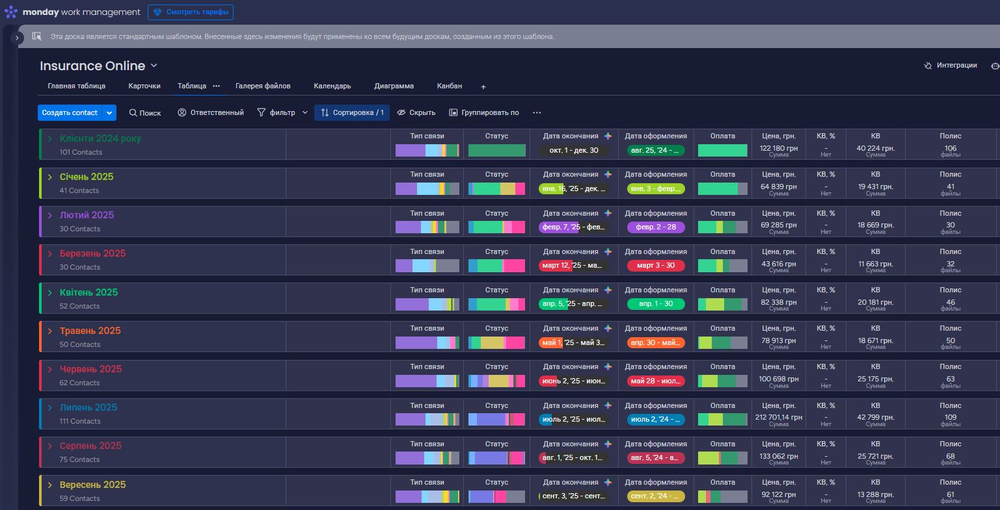
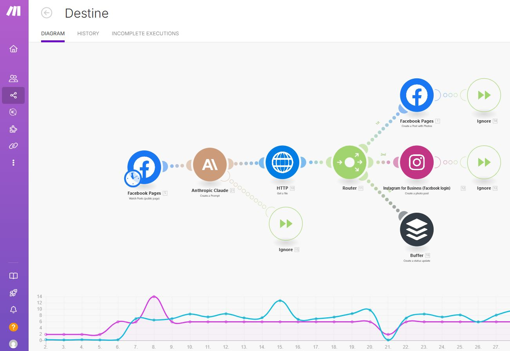
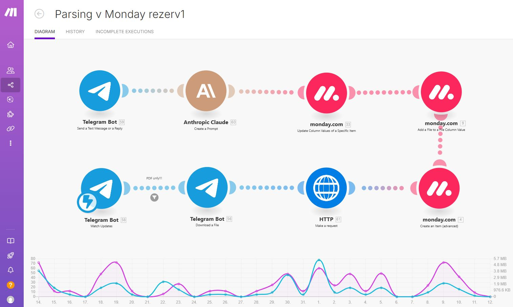
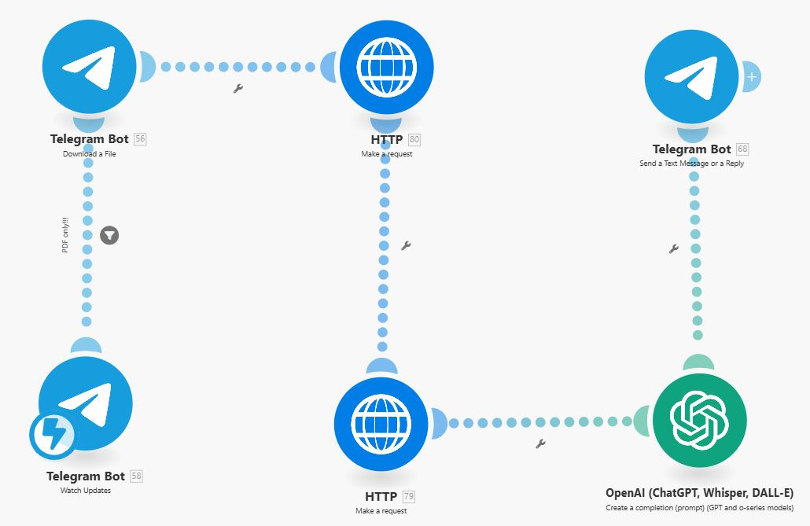

Rezumat Profesional
Specialist IT cu experiență în suport tehnic, automatizare procese și integrare sisteme, capabil să gestioneze volume mari de informații și să rezolve probleme complexe prin gândire analitică. Abilități avansate de comunicare în medii multilingve și orientare spre optimizare continuă.
Experiență Profesională
Inginer Suport IT & Specialist Automatizare
Oct 2024 – Prezent
- Asigurarea funcționării continue a platformei iSellMore pentru peste 100 de agenți, inclusiv sincronizarea cu Charisma (Totalsoft), configurare, depanare și suport tehnic în mediu multilingv
- Diagnoza și rezolvarea problemelor complexe ale utilizatorilor în diferite versiuni lingvistice
- Testarea acurateții localizării software pentru interfețele în limbile română, rusă și ucraineană
- Identificarea și raportarea bug-urilor de localizare prin sisteme interne de ticketing
- Configurarea și mentenanța software și hardware pentru utilizatori internaționali
- Instruirea clienților în utilizarea produselor IT cu documentație multilingvă
- Documentarea și raportarea cererilor clienților
Tehnologii: iSellMore, Charisma (Totalsoft), VPN, OLAP, Networking, Office 365, Jira, iOS, Microsoft Exchange, Remote Desktop, Android Testing, Microsoft Teams, Monday CRM, Binotel
Broker de Asigurare
Destine Broker de Asigurare-Reasigurare
Feb 2024 – Prezent
- Gestionarea polițelor de asigurare și a relațiilor cu clienții internaționali
- Procesarea documentației multilingve și asigurarea calității materialelor traduse
- Vânzări și comunicare cu clienții în multiple limbi
- Utilizarea aplicațiilor software pentru gestiunea contractelor și evidența clienților
Competențe: Vânzări, Asigurări, Asigurări Auto, Asigurări de Viață, Asigurări de Sănătate, Comunicare & Negociere, Documentație Multilingvă
Ofițer Logistică
Tulcea Humanitarian Logistics Hub
Feb 2022 – Iul 2023
- Procesarea documentelor vamale în multiple limbi
- Gestionarea sosirii mărfurilor umanitare și a documentației aferente
- Colaborarea cu brokeri vamali internaționali
- Controlul calității documentației multilingve de transport
- Coordonarea operațiunilor de încărcare/descărcare
Competențe: Operațiuni Vamale, Gestionare Documente, Logistică Internațională, Control Calitate, Documentație Multilingvă
Agent Maritim
BIO-CONSULTING UKRAINE LTD
Sep 2018 – Feb 2022
- Înregistrarea declarațiilor navelor la sosire și plecare
- Suport multilingv pentru comisiile vamale
- Reprezentarea intereselor navelor în operațiunile portuare internaționale
- Însoțirea turiștilor cu servicii de ghidare multilingvă
- Gestionarea documentației maritime internaționale
Competențe: Operațiuni Maritime, Declarații Vamale, Relații Internaționale, Servicii Turistice, Suport Multilingv
Manager de Proiect
Sep 2017 – Mai 2019
- Gestionarea inițiativelor cheie pentru dezvoltarea sectorului horticol din Ucraina
- Supervizarea operațiunilor proiectului și coordonarea cu părțile interesate
- Implementarea strategiilor pentru creșterea productivității și accesul pe piață
- Facilitarea programelor de instruire pentru comunitățile agricole
- Promovarea practicilor ecologice în sectorul agricol
- Conducerea inițiativelor de marketing multicanal pentru produse agricole
Competențe: Management de Proiect, Conducere Echipă, Planificare Strategică, Coordonare Stakeholderi, Marketing Digital, Marketing Multicanel, Dezvoltare Agricolă, Facilitare Instruire
Broker de Asigurare – Șef Sucursală
PJSC "TAS INSURANCE COMPANY"
Iun 2015 – Prezent
- Supervizarea operațiunilor zilnice ale sucursalei, asigurând conformitatea cu standardele companiei
- Gestionarea și instruirea echipelor pentru îmbunătățirea performanței și satisfacției clienților
- Dezvoltarea și implementarea strategiilor de vânzări și marketing
- Monitorizarea performanței sucursalei prin analiză financiară
Șef Departament Daune
INSURANCE PJSC "KRONA"
Mar 2008 – Iun 2015
- Evaluarea și analiza daunelor clienților cu grad ridicat de acuratețe
- Gestionarea documentației multilingve de daune și procesarea acesteia
- Asigurarea calculării despăgubirilor în conformitate cu termenii polițelor
- Optimizarea proceselor interne și reducerea timpului de soluționare
- Suport de urgență și comunicare clară cu clienții internaționali
- Menținerea unui nivel ridicat de satisfacție a clienților peste barierele lingvistice
Competențe: Evaluare Daune, Optimizare Procese, Comunicare cu Clienții, Asigurare Calitate, Suport Multilingv, Microsoft Office
Specialist Service Desk
Freelance
Mar 2007 – Prezent
- Înregistrarea și rezolvarea problemelor tehnice pe multiple platforme și în multiple limbi
- Procesarea cererilor de service și suport tehnic prin diverse canale de comunicare
- Testarea aplicațiilor web și mobile pentru acuratețea localizării
- Executarea cazurilor de testare pentru asigurarea calității lingvistice și funcționale
- Planificarea și implementarea modificărilor IT, inclusiv cerințe de localizare
- Monitorizarea sistemelor pentru prevenirea problemelor și investigarea problemelor recurente
- Colaborarea cu echipe internaționale pentru rezolvarea problemelor de compatibilitate cross-lingvistică
Tehnologii: Windows, Linux, VPN, Active Directory, Networking, Office 365, Windows Server, Microsoft Exchange, Google Docs, ServiceNow, Administrare Rețea, Testare Localizare
Educație
Distribuitor Autorizat de Asigurare și Manager de Reasigurare
Institutul de Studii Financiare (ISF)
2024
MBA – Erasmus pentru Tineri Antreprenori
Programul Tinerilor Antreprenori
2024
Masterat – Contabilitate și Audit
Universitatea Agrară de Stat din Odesa
2007–2008
Masterat – Agronomie
Universitatea Agrară de Stat din Odesa
2002–2007
MBA – Viticultură
Domaine GUILLOT-BROUX
2004–2005
Limbi Străine
Română
Nativ
Ucraineană
Avansat
Rusă
Avansat
Franceză
Avansat
🇺🇸 Engleză
Intermediar
Competențe Tehnice
Suport Tehnic & Administrare
Configurare și mentenanță software/hardware, suport utilizatori, diagnoză și depanare, administrare sisteme, testare localizare
Automatizare & Integrare
Make.com, API, fluxuri de date, sincronizare între platforme, automatizare procese repetitive
Baze de Date & Raportare
SQL, OLAP, Microsoft Excel avansat, analiză date, generare rapoarte operaționale
Platforme & Instrumente
iSellMore, Charisma (Totalsoft), Jira, Monday CRM, Office 365, Microsoft Teams, Active Directory, VPN
Infrastructură IT
Windows, Linux, Windows Server, Microsoft Exchange, Remote Desktop, Networking, administrare rețea
Dezvoltare & AI
JavaScript, regex, dezvoltare API, integrare ChatGPT/Claude, automatizare social media, boți Telegram/WhatsApp
Proiecte
Sistem CRM & Automatizare Monday.com
📊
Platformă de Gestionare a Relațiilor cu Clienții
Monday.com & Make.com
Platformă completă de gestionare a relațiilor cu clienții cu fluxuri de lucru automatizate. Include gestionarea bazei de date a clienților, ciclul de viață al contractelor, urmărire financiară și notificări automate pentru reînnoiri și calculul comisioanelor.
Caracteristici:
- Gestionare completă a bazei de date a clienților cu categorisirea contractelor
- Notificări automate de expirare a contractelor și fluxuri de reînnoire
- Gestionare informații de contact cu istoricul comunicării
- Urmărire lunară a comisioanelor și recompenselor de asigurare
- Funcționalități avansate de căutare și filtrare
- Instrumente de backup și monitorizare a datelor
Tehnologii: Monday.com, Make.com, Automatizare Fluxuri, Gestionare Baze de Date

Platformă Automatizare Social Media
📱
Sistem Automat de Postare Facebook/Instagram/TikTok
Make.com & Integrare AI
Sistem complet automatizat de gestionare a rețelelor sociale care preia conținut din pagini Facebook sursă, rescrie inteligent conținutul folosind AI și publică pe multiple platforme fără intervenție umană.
Caracteristici:
- Preluare automată a conținutului din pagini Facebook publice
- Rescriere și adaptare a conținutului prin AI
- Postare automată pe Facebook, Instagram și TikTok
- Formatarea conținutului pentru fiecare platformă
- Fără intervenție umană – flux complet automatizat
- Programare postări cu timing optim
Tehnologii: Make.com, Facebook Graph API, Instagram API, TikTok API, Claude API, Automatizare Social Media

Bot Automatizare Asigurări (Telegram)
🤖
Flux Automat de Procesare a Documentelor de Asigurare
Make.com Automation
Flux de lucru automatizat pentru procesarea documentelor de asigurare prin intermediul Telegram. Primește documente PDF, extrage date cheie și actualizează automat dashboard-ul Monday.com cu informații despre polițe și notificări pentru clienți.
Caracteristici:
- Procesare documente PDF prin bot Telegram
- Extragere automată a datelor
- Integrare cu Monday.com și încărcare fișiere
- Notificări generate de AI pentru clienți
- Gestionare completă a polițelor de asigurare
Tehnologii: Telegram Bot API, Make.com, Monday.com API, Claude API, Parsare PDF

PDF-Extractor
📄
Instrument Automat de Procesare a Documentelor
Instrument automatizat pentru extragerea datelor din documente PDF, utilizat în fluxurile de procesare a documentelor de asigurare.
Caracteristici:
- Procesare PDF prin API
- Extragere date structurate folosind pattern-uri personalizabile
- Date formatate pentru procesare automată ulterioară
- Deployabil în arhitectură serverless
Tehnologii: JavaScript, pdf-parse, Vercel, Serverless, API Development
